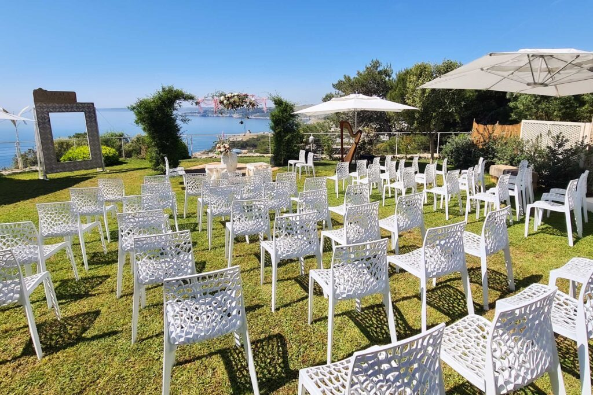
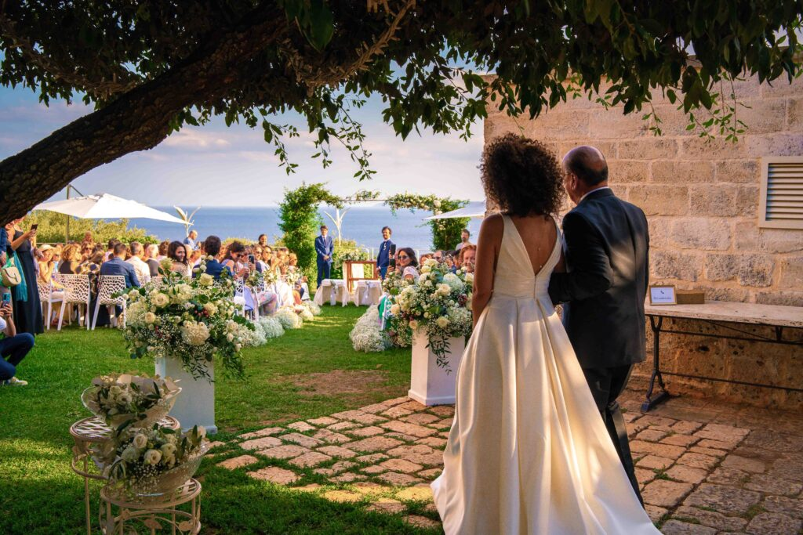

Uno dei sogni più romantici per molte coppie è sposarsi vicino al mare. Ma c'è una differenza fondamentale tra un matrimonio sulla spiaggia e un matrimonio in una location esclusiva sul mare. Scopriamo insieme vantaggi e svantaggi di ciascuna scelta.
Il Matrimonio in Spiaggia: Il Fascino e i Limiti
Un matrimonio in spiaggia ha un fascino innegabile — la sabbia sotto i piedi, il suono delle onde, la luce dorata del tramonto. Ma nella realtà pratica presenta sfide concrete che pochi immaginano prima di sceglierlo.
- Mancanza di Privacy — Il mare e la spiaggia non sono davvero vostri. Anche le spiagge più belle e isolate attirano bagnanti, famiglie e bambini. I lidi vicini o eventi rumorosi possono disturbare la cerimonia o il ricevimento.
- Meteo Imprevedibile — Sole intenso, vento o pioggia improvvisa creano disagio senza adeguate strutture di riparo. In Salento, il vento può essere un ospite inatteso anche nelle giornate più belle.
- Disagi per gli Ospiti — Camminare sulla sabbia con abiti eleganti e tacchi alti, la calura senza ombra, e l'assenza di servizi confortevoli: sono inconvenienti reali, soprattutto per gli ospiti più anziani o con bambini piccoli.
- Sfide Logistiche — Trasportare e montare mobili, decorazioni, attrezzatura audio e catering su una spiaggia è complesso, costoso e soggetto alle autorizzazioni comunali.
La Soluzione: La Vostra Location Esclusiva sul Mare
Una location esclusiva sul mare come Cala dei Balcani elimina tutti questi problemi, offrendo al tempo stesso la magia del paesaggio marino che avete sempre sognato.
Esclusività Totale
- La vista sul mare è solo vostra
- Nessun bagnante o passante
- Nessuna interruzione indesiderata
Eleganza e Comfort
- Spazi raffinati e arredi di qualità
- Pavimentazione stabile per tacchi e sedie
- Aree climatizzate sempre disponibili
Adattabilità Meteo
- Spazi interni ed esterni integrati
- Coperture e tensostrutture eleganti
- Piano B sempre pronto senza stravolgere
Logistica Semplificata
- Catering e fornitore integrati
- Parcheggio e accessibilità garantiti
- Nessuna autorizzazione speciale
Santa Cesarea Terme: La Destinazione Ideale nel Salento
Scegliere Santa Cesarea Terme per il vostro matrimonio significa immergersi in una bellezza rara, dove il mare Adriatico e la natura creano un'atmosfera romantica e indimenticabile. Le acque termali, le scogliere a picco sul mare e l'architettura orientale delle ville storiche rendono questo borgo uno scenario unico al mondo.
La vicinanza a destinazioni come Otranto e Castro permette inoltre agli ospiti di vivere il Salento a tutto tondo, arricchendo l'esperienza con escursioni e scoperte culturali.
Conclusioni
Scegliere una location esclusiva sul mare come Cala dei Balcani significa avere il meglio dei due mondi: la magia del paesaggio marino e la perfezione logistica di una struttura d'eccellenza. Il vostro matrimonio merita un palcoscenico all'altezza del momento più importante della vostra vita.
Volete vedere la location di persona?
Contattateci per organizzare una visita e scoprire dal vivo la magia di Cala dei Balcani.

